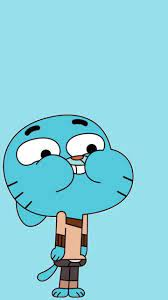
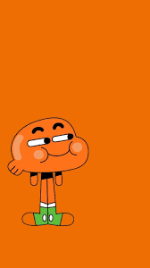
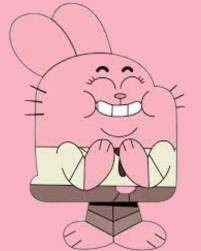
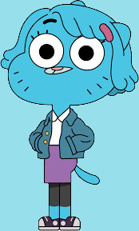
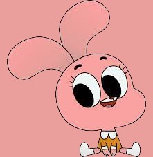

|

I am a twelve-year-old blue cat who is prone to causing mischief across the town due to not staying inside of the box. He is fairly egotistical and a veteran snarker; despite this, I has a big heart and is surprisingly selfless. Although I can be intelligent at times, he is not very wise, often doing things in the most convoluted of manners and gearing his energy towards fruitless endeavors. |

Darwin Raglan Caspian Ahab Poseidon Nicodemus Watterson III is the deuteragonist in The Amazing World of Gumball. He used to be Gumball's pet goldfish, but one day, he grew legs and generally adapted to life outside of water, so he was adopted by the Watterson family. |
|

Richard Buckley Watterson is one of the main characters in The Amazing World of Gumball. He serves the role of the father in the Watterson family. Unlike the traditional father, however, Richard is not wise, nor is he a good role model for his children in any way. Despite his misguided advice and uncouth mannerisms, Richard has good intentions and loves his family all the same. |

Doctor Nicole Watterson is one of the main characters of The Amazing World of Gumball. Nicole is the mother of the Watterson family and is the backbone and only truly responsible member of the family. She is very dedicated to her family and would do anything in her power to keep them comfortable and safe. |
|

Anais Errrrrr Watterson is the tritagonist and one of the main characters of The Amazing World of Gumball. She is the youngest member of the Watterson family and the most rational, despite being only four years old. She is in 8th (and later 9th) grade at Elmore Junior High which she attends with her older brothers, Gumball and Darwin, and is in a higher grade than them, as revealed in "The Others." |